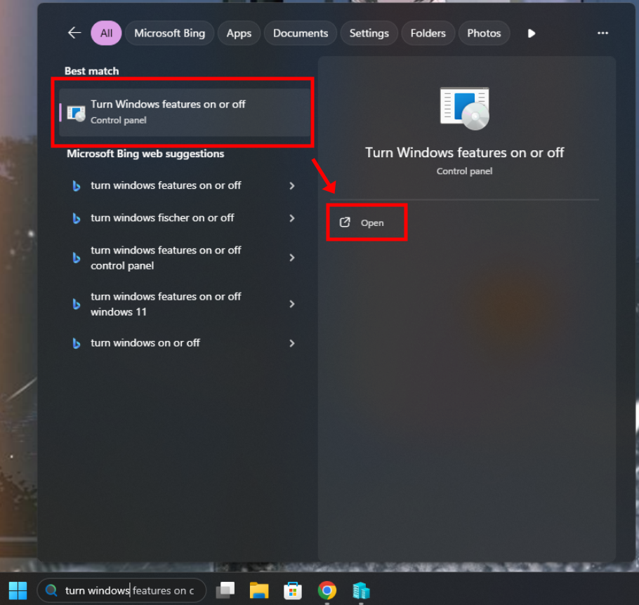
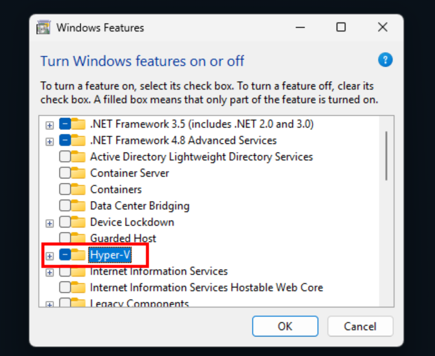
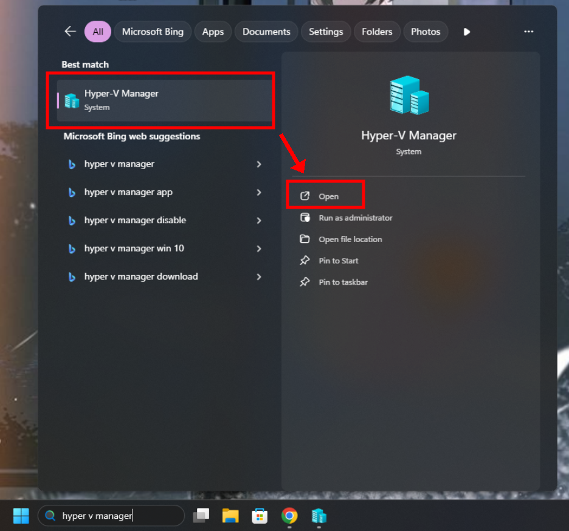

<!DOCTYPE html>
<html lang="en">
<head>
  <meta charset="UTF-8" />
  <meta name="viewport" content="width=device-width, initial-scale=1.0" />
  <title>Building a One-Page Site</title>
  <link rel="stylesheet" href="../assets/style/style.css" />
  <script src="/IRCWEB/assets/scripts/NavbarCloseLogic.js" defer></script>
</head>
<body>
  <div class="layout">
    <aside class="sidebar">
      <h1 class="site-title">Sette opp IRC server på en Ubuntu-Server i Hyper-V </h1>
      <div class="menu">
        <div class="menu-section">
          <button class="menu-toggle"> General information▾</button>
          <ul class="menu-list">
            <li><a href="../introduksjon/innhold.html">Innholdsfortegnelse</a></li>
          </ul>
        </div>
        <div class="menu-section">
          <button class="menu-toggle"> Steg-for-steg gjennomgang▾</button>
          <ul class="menu-list">
            <li><a  class="active" href="../steg-for-steg/hyperv.html">Låse opp Hyper V</a></li>
            <li><a href="../steg-for-steg/ubuntus.html">Ordne en Ubuntu Server</a></li>
            <li><a href="../steg-for-steg/ubuntusystem.html">Sette opp Ubuntu Server Systemet</a></li>
          </ul>
      </div>
    </aside>

    <main class="content">
      <article>
        <header>
          <a href="../introduksjon/innhold.html" class="nav-btn">←</a>
          <a href="ubuntus.html" class="nav-btn next">→</a>
        </header>

        <h1>Sette opp Hyper-V i windows</h1>
        <p>NB: Det er noen krav for å låse opp Hyper-V. Sørg for at du utfyller disse kravene: </p>
           <h2>Maskinvarekrav</h2>
        <ul>
          <li>64-bit prosessor med SLAT. Second Level Address Translation.</li>
          <li>CPU-støtte for virtualisering. Intel VT-x eller AMD-V må være aktivert i BIOS/UEFI.</li>
          <li>Minst 4 GB ram, helst mer.</li>
          <li>Windows 10 Pro/Enterprise/Education, eller Windows 11 Pro/Enterprise/Education.</li>
        </ul>

        <h2>Steg 1: Finne Hyper-V</h2>
        <p>Gå i søkemotoren til windows og søk “Turn Windows Features on or off” </p>
        

        <h2>Steg 2: Skru på Hyper-V</h2>
        <p>Bla ned til du finner "Hyper-V" og sørg for at denne er huket av. Klikk på "OK" når den er det. </p>
        

        <h2>Steg 3: Sjekk at Hyper-V er låst opp</h2>
        <p>Søk etter "Hyper-V Manager" i søkemonitoren og åpne den. Hvis det ikke dukker opp kan det være nødvendig å restarte maskinen og sjekke igjen. </p>
        
        <header>
          <a href="../introduksjon/innhold.html" class="nav-btn">←</a>
          <a href="ubuntus.html" class="nav-btn next">→</a>
        </header>
      </article>
    </main>
  </div>

  <script>
    document.querySelectorAll('.menu-toggle').forEach(button => {
      button.addEventListener('click', () => {
        const list = button.nextElementSibling;
        list.classList.toggle('open');
        button.classList.toggle('open');
      });
    });
  </script>
</body>
</html>
